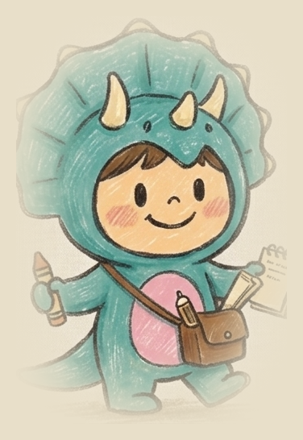

DinoPlan
DinoPlan
Google로 로그인
로그인하면 내 일정이 기기 간에 안전하게 동기화됩니다.
카카오톡 등 앱 안에서 열면 구글 로그인이 막혀요.
아래 버튼으로 브라우저에서 열어 주세요.
브라우저로 열기
주소 복사
▾
월
화
수
목
금
토
/
일
달력
메모 수정 이력
닫기
설정 · 백업
일정 0개
일정 검색
데이터 백업
내보내기
가져오기
계정
—
로그아웃
Ver.608
검색 결과
닫기
이 날 일정 추가
새 일정
검색
제목
시작일
종료일
메모 (선택)
종류
업무
중요일정
개인일정
휴일일정
주말에는 업무 일정을 설정할 수 없습니다
배경색
하루 일정은 배경색이 적용되지 않습니다
취소
저장
이 일정 삭제